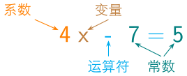
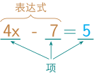
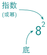
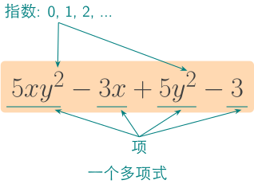
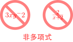
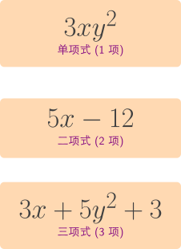

代数中的基本定义
什么是等式？
等式表示两个事物相等。它中间有等于号 \(=\)，比如：
这个等式的意思是：左边（\(x + 2\)）等于右边（\(6\)）。
等式的组成部分
为了方便讨论，我们给等式的各个部分起了名字（总不能说“那个东西”吧！）
下面是一个等式，表示 \(4x − 7 = 5\)，并标注了各部分名称：

变量（Variable）代表一个未知的数，通常用字母表示，如 \(x\) 或 \(y\)，也可以是符号或单词。
常数（Constant）单独出现的数字叫作常数，比如 \(7\) 和 \(5\)。
系数（Coefficient）放在变量前面、用来乘以变量的数，就是系数。比如 \(4x\) 表示 \(4\) 乘以 \(x\)，所以 \(4\) 是系数。
没有写数字的变量其实系数是 \(1\)，比如 \(x\) 就是 \(1x\)。
有时候系数也用字母表示，比如 \(a\) 或 \(b\)。
- \(x\) 是变量
- \(a\) 和 \(b\) 是系数
- \(c\) 是常数
运算符（Operator）是一个符号，像 \(+\)、\(×\) 这样的符号，表示要对值进行什么操作。

项（Term）可以是一个数、一个变量，或者数和变量的乘积。
表达式（Expression）由多个项组成，项之间用 \(+\) 或 \(−\) 分隔。
现在，我们可以这样说：
- “这个表达式只有两个项”
- “第二个项是常数”
- “你确定系数真的是 \(4\) 吗？”
指数（Exponent）
指数（如 \(x^2\) 中的 \(2\)）表示一个数要乘自己多少次。

指数简化了写出多次相乘。
比写成
更简洁。
多项式（Polynomial）
多项式例子：
多项式可以包含常数、变量和非负整数指数（0、1、2、3……），但不能除以变量。


单项式、二项式、三项式
根据项的数量，多项式有不同的名字：

同类项（Like Terms）
同类项是指变量及其指数完全相同的项。
换句话说，就是“长得一样”的项。（系数可以不同）
这些都是同类项，因为它们的变量都是 \(xy^2\)。